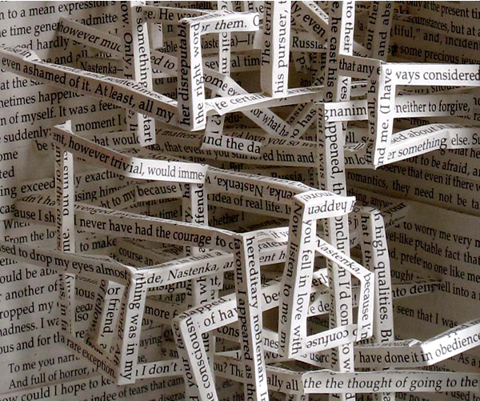

It’s not the computer itself which has forever changed the linearity of text – it’s the possibility, of entirely new text structure: the hypertext.Starting in the mid-1980s, the arrival of offline hypertexts signalled a radical change, which was to have a profound effect on the concept of the literary work. In fact, the hypertext enabled the realisation of an essential new characteristic: non-linearity of text.
The consequence of this was a existential threat to the integrity of the sequential work, as it had been presented for centuries in books. And even though literature is still the main field for experimentation and innovation in print, the arrival of the hypertext enabled, perhaps for the very first time, a characteristic which could not effectively be reproduced in print.33American novelist and short story writer, Robert Coover, clearly and authoritatively described this phenomenon in his seminal essay The End of Books:
“Print documents may be read in hyperspace, but hypertext does not translate into print.” The superior form of the hypertext brings true freedom from the tyranny of the line.”34
 Doyle Partners, work "Hypertext2," continued exploration of the hypertext.
The hypertext; written and read on the computer, where the line in fact does not exist unless one invents and implants it in the text.36